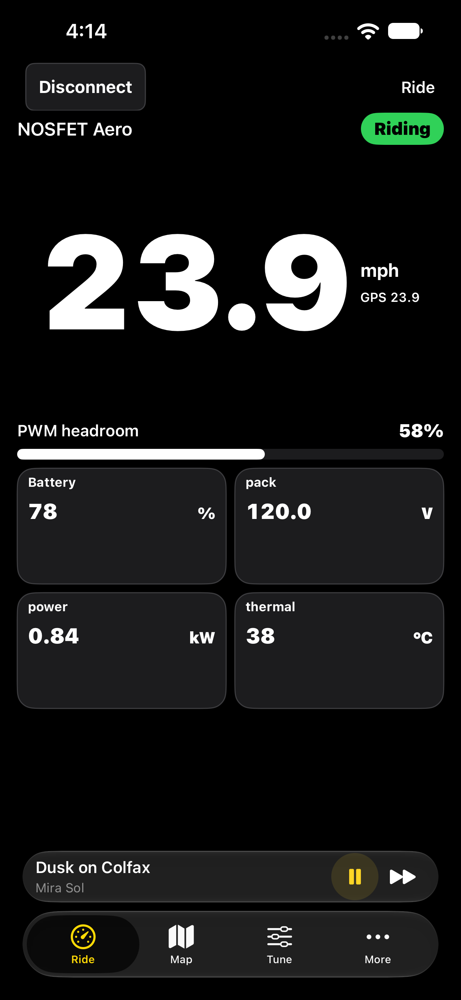
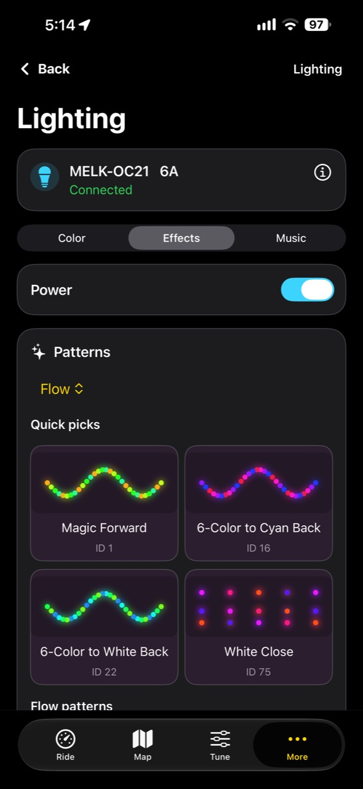
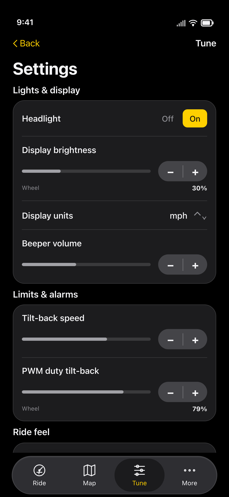
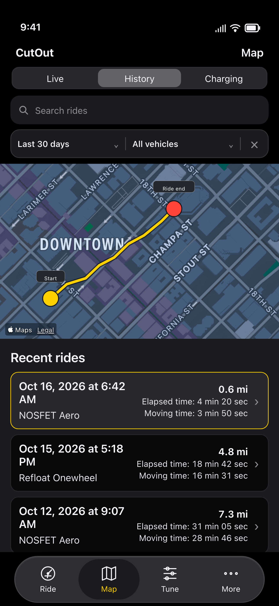
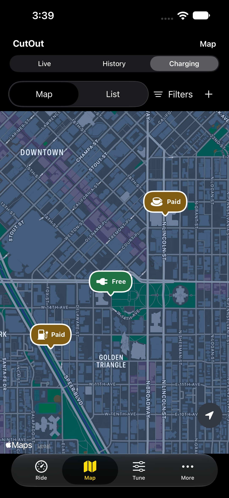

CutOut app screenshots

EUC main with music
Native capture · synthetic data

RGB Effects
User-provided app screenshot

EUC Tune
Rendered mockup · synthetic data

Ride History
Rendered mockup · synthetic data

Charging map
Native capture · synthetic data